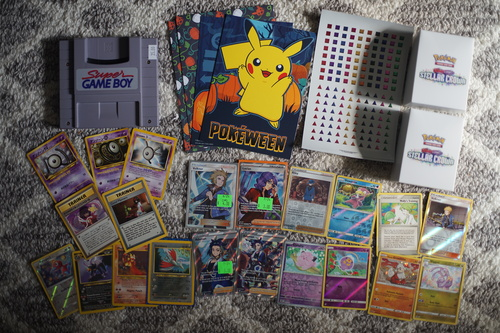
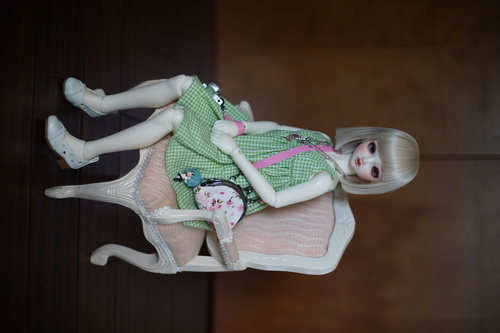

We stopped by our favorite store, Gamer's Tavern, and found out the owner was selling the games portion of his store! Possibly devastating...
Gamer's Tavern actually has really decent pricing and does get interesting stuff in. I hope the new owner will be just as cool as the current!
My love...! I've searched so long... I didn't think he existed.... HE'S REAL!!!! Now I have to find 2 more for hors

While at Gamer's Tavern, I found a new boy on a model kit with this stunning illustration on it! His name is Max Jenius and he looks like Мурат Насыров. What more could you want in a fictional man?!
And for a tiny thrift haul:
Due to increased luck from wearing my Hina shirt today, I found a perfect chair for Hina for $5 at Goodwill~
Her heels just barely float above the ground. I wonder how the boys will fit in it.

I took my spresso machine apart after discovering a steam leak (HOT HOT HOT OUCHIE) and found water creeping out of the connection between the heating element and the boiler. ;_;
I'm very unexcited to take the entire boiler out and confirm and replace the o-rings in it. We had just found another Starbucks Barista less than a month ago in Goodwill for $40 with a portafilter. I decided against it, not knowing how much a dang portafilter costs or that I would have to do a tedious repair so soon.